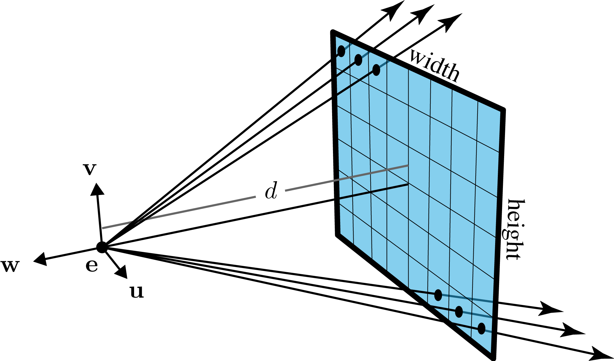
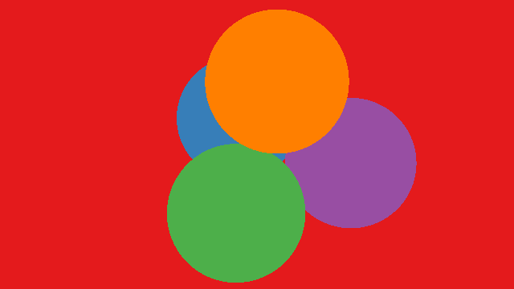
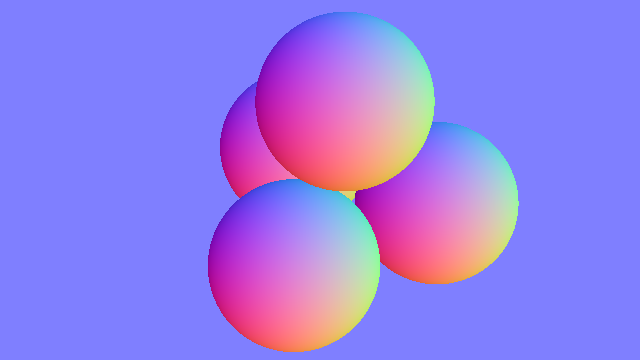

\(\newcommand{\A}{\mat{A}}\)
\(\newcommand{\B}{\mat{B}}\)
\(\newcommand{\C}{\mat{C}}\)
\(\newcommand{\D}{\mat{D}}\)
\(\newcommand{\E}{\mat{E}}\)
\(\newcommand{\F}{\mat{F}}\)
\(\newcommand{\G}{\mat{G}}\)
\(\newcommand{\H}{\mat{H}}\)
\(\newcommand{\I}{\mat{I}}\)
\(\newcommand{\J}{\mat{J}}\)
\(\newcommand{\K}{\mat{K}}\)
\(\newcommand{\L}{\mat{L}}\)
\(\newcommand{\M}{\mat{M}}\)
\(\newcommand{\N}{\mat{N}}\)
\(\newcommand{\One}{\mathbf{1}}\)
\(\newcommand{\P}{\mat{P}}\)
\(\newcommand{\Q}{\mat{Q}}\)
\(\newcommand{\Rot}{\mat{R}}\)
\(\newcommand{\R}{\mathbb{R}}\)
\(\newcommand{\S}{\mathcal{S}}\)
\(\newcommand{\T}{\mat{T}}\)
\(\newcommand{\U}{\mat{U}}\)
\(\newcommand{\V}{\mat{V}}\)
\(\newcommand{\W}{\mat{W}}\)
\(\newcommand{\X}{\mat{X}}\)
\(\newcommand{\Y}{\mat{Y}}\)
\(\newcommand{\argmax}{\mathop{\text{argmax}}}\)
\(\newcommand{\argmin}{\mathop{\text{argmin}}}\)
\(\newcommand{\a}{\vec{a}}\)
\(\newcommand{\b}{\vec{b}}\)
\(\newcommand{\c}{\vec{c}}\)
\(\newcommand{\d}{\vec{d}}\)
\(\newcommand{\e}{\vec{e}}\)
\(\newcommand{\f}{\vec{f}}\)
\(\newcommand{\g}{\vec{g}}\)
\(\newcommand{\mat}[1]{\mathbf{#1}}\)
\(\newcommand{\min}{\mathop{\text{min}}}\)
\(\newcommand{\m}{\vec{m}}\)
\(\newcommand{\n}{\vec{n}}\)
\(\newcommand{\p}{\vec{p}}\)
\(\newcommand{\q}{\vec{q}}\)
\(\newcommand{\r}{\vec{r}}\)
\(\newcommand{\transpose}{{\mathsf T}}\)
\(\newcommand{\tr}[1]{\mathop{\text{tr}}{\left(#1\right)}}\)
\(\newcommand{\s}{\vec{s}}\)
\(\newcommand{\t}{\vec{t}}\)
\(\newcommand{\u}{\vec{u}}\)
\(\newcommand{\vec}[1]{\mathbf{#1}}\)
\(\newcommand{\x}{\vec{x}}\)
\(\newcommand{\y}{\vec{y}}\)
\(\newcommand{\z}{\vec{z}}\)
\(\newcommand{\0}{\vec{0}}\)
\(\renewcommand{\v}{\vec{v}}\)
\(\renewcommand{\hat}[1]{\widehat{#1}}\)
Computer Graphics – Ray Casting
To get started: Clone this repository by issuing:
git clone http://github.com/alecjacobson/computer-graphics-ray-casting.git
Background
Read Sections 4.1–4.4 of Fundamentals of Computer Graphics (4th Edition).
We will cover basic shading, shadows and reflection in the next assignment.
Scene Objects
This assignment will introduce a few primitives for 3D geometry:
spheres,
planes and triangles. We’ll
get a first glimpse that more complex shapes can be created as a collection of
these primitives.
The core interaction that we need to start visualizing these shapes is
ray-object intersection. A ray emanating from a point \(\mathbf{e} ∈ \mathbb{R}³\)
(e.g., a camera’s “eye”) in a direction \(\mathbf{d} ∈ \mathbb{R}³\) can be
parameterized by a single number \(t ∈ [0,∞)\). Changing the value of \(t\) picks
a different point along the ray. Remember, a ray is a 1D object so we only need
this one “knob” or parameter to move along it. The parametric
function for a ray written
in vector notation is:
$$
\mathbf{r}(t) = \mathbf{e} + t\mathbf{d}.
$$
For each object in our scene we need to find out:
- is there some value \(t\) such that the ray \(\mathbf{r}(t)\) lies on the
surface of the object?
- if so, what is that value of \(t\) (and thus what is the position of
intersection \(\mathbf{r}(t)∈\mathbb{R}³\)
- and what is the surface’s unit
normal vector at the
point of intersection.
For each object, we should carefully consider how many ray-object
intersections are possible for a given ray (always one? sometimes two? ever
zero?) and in the presence of multiple answers choose the closest one.
Question: Why keep the closest hit?
Hint: 🤦🏻
In this assignment, we’ll use simple representations for primitives. For
example, for a plane we’ll store a point on the plane and the normal anywhere on
the plane.
Question: How many numbers are needed to uniquely determine a plane?
Hint: A point position (3) + normal vector (3) is too many. Consider how
many numbers are needed to specify a line in 2D.
Camera
In this assignment we will pretend that our “camera” or “eye” looking into the
scene is shrunk to a single 3D point \(\mathbf{e} ∈ \mathbb{R}³\) in space. The
image rectangle (e.g., 640 pixels by 360 pixels) is placed so the image center
is directly in front of the
“eye” point at a certain “focal
length” \(d\). The image of pixels is
scaled to match the given width and height defined by the camera. Camera
is equipped with a direction that moves left-right across the image
\(\mathbf{u}\), up-down \(\mathbf{v}\), and from the “eye” to the image
\(-\mathbf{w}\). Keep in mind that the width and height are measure in the
units of the scene, not in the number of pixels. For example, we can fit a
1024x1024 image into a camera with width \(=1\) and height \(=1\).
Question: Given that \(\mathbf{u}\) points right and \(\mathbf{v}\) points up,
why does minus \(\mathbf{w}\) point into the scene?
Hint: ☝️

Our pinhole
perspective
camera with notation (inspired by [Marschner & Shirley
2015])
Triangle Soup
Triangles are the simplest 2D polygon. On the computer we can represent a
triangle efficiently by storing its 3 corner positions. To store a triangle
floating in 3D, each corner position is stored as 3D position.
A simple, yet effective and popular way to approximate a complex shape is to
store list of (many and small) triangles covering the shape’s surface. If we
place no assumptions on these triangles (i.e., they don’t have to be connected
together or non-intersecting), then we call this collection a “triangle
soup”.
When considering the intersection of a ray and a triangle soup, we simply need
to find the first triangle in the soup that the ray intersects first.
False color images
Our scene does not yet have light so the only accurate rendering would be a
pitch black image. Since this is rather boring, we’ll create false or pseudo
renderings of the information we computed during ray-casting.
Object ID image
The simplest image we’ll make is just assigning each object to a color. If a
pixel’s closest hit comes from the \(i\)-th object then we paint it with the \(i\)-th
rgb color in our color_map.

This “object id image” shows which object is closest along the ray passing
through each pixel. Each object is assigned to its own unique color.
Depth images
The object ID image gives us very little sense of 3D. The simplest image to
encode the 3D geometry of a scene is a depth
image. Since the range of depth is
generally \([d,∞)\) where \(d\) is the distance from the camera’s eye to the camera
plane, we must map this to the range \([0,1]\) to create a grayscale
image. In this assignment we use a
simple non-linear mapping based on reasonable default values.
This grayscale “depth image” shows the distance to the nearest object along
the ray through each pixel. Shorter distances are brighter than farther
distances.
Normal images
The depth image technically captures all geometric information visible by
casting rays from the camera, but interesting surfaces will appear dull because
small details will have nearly the same depth. During ray-object intersection
we compute or return the surface normal vector \(\mathbf{n} ∈ \mathbf{R}³\) at the
point of intersection. Since the normal vector is unit
length, each coordinate value is
between \([-1,1]\). We can map the normal vector to an rgb value in a linear way
(e.g., \(r = ½ x + ½\)).
Although all of these images appear cartoonish and garish, together they reveal
that ray-casting can probe important pixel-wise information in the 3D scene.

This colorized “normal image” shows surface normal at the nearest point in the
scene along the ray through each pixel.
Tasks
In this assignment you will implement core routines for casting rays into a 3D
and collect “hit” information where they intersect 3D objects.
Whitelist
This assignment uses the Eigen for numerical
linear algebra. This library is used in both professional and academic numerical
computing. We will use its Eigen::Vector3d as a double-precision 3D vector
class to store \(x,y,z\) data for 3D points and 3D vectors. You can add (+)
vectors and points together, multiply them against scalars (*) and compute
vector dot products (a.dot(b)).
In addition, #include <Eigen/Geometry> has useful geometric functions such as
3D vector cross product
(a.cross(b)).
src/write_ppm.cpp
See
computer-graphics-raster-images.
src/viewing_ray.cpp
Construct a viewing ray given a camera and subscripts to a pixel.
src/first_hit.cpp
Find the first (visible) hit given a ray and a collection of scene objects
Sphere::intersect_ray in src/Sphere.cpp
Intersect a sphere with a ray.
Plane::intersect_ray in src/Plane.cpp
Intersect a plane with a ray.
 Running
Running ./raycasting should produce id.ppm that looks like this.
 Running
Running ./raycasting should produce depth.ppm that looks like this.
 Running
Running ./raycasting should produce normal.ppm that looks like this.
Triangle::intersect_ray in src/Triangle.cpp
Intersect a triangle with a ray.
 Running
Running ./raycasting ../data/triangle.json should produce id.ppm that looks like this.
TriangleSoup::intersect_ray in src/TriangleSoup.cpp
Intersect a triangle soup with a ray.
 Running
Running ./raycasting ../data/bunny.json should produce images that like this. Note: This example may take a few seconds to compute.
Pro Tip: Mac OS X users can quickly preview the output images using
./raycasting && qlmanage -p {id,depth,normal}.ppm
Flicking the left and right arrows will toggle through the results
Pro Tip: After you’re confident that your program is working correctly,
you can dramatic improve the performance simply by enabling compiler
optimization:
mkdir build-release
cd build-release
cmake ../ -DCMAKE_BUILD_TYPE=Release
make